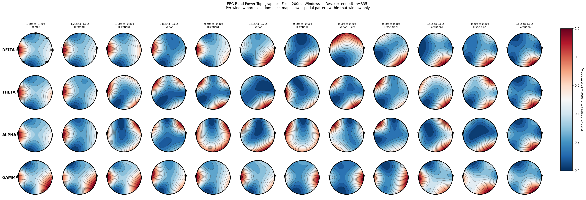
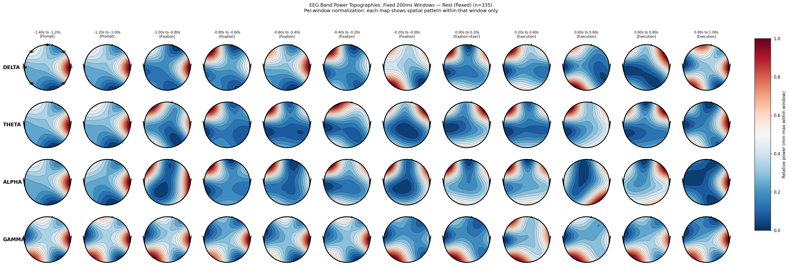

Project Overview
A wearable rehabilitation device engineered to assist arm extension and retraction for patients recovering from stroke or neurological conditions. The system combines an EEG headset with electrical muscle stimulation (EMS) pads on the bicep and tricep — translating detected intention into physical assistance.
The project initially used EMG to detect neural activity in the muscles, but to achieve faster response times we switched to EEG to better detect the user's intention to move the arm.
At the core is an AI classification model trained on data from 20+ participants. It decodes muscle intention from EEG signals in real time, enabling the exoskeleton to respond to what the patient is trying to do — not just what they can physically achieve.
My role covered the full research pipeline: experimental protocol design, data collection, hardware integration with the EEG X.on device, and collaboration on the AI-driven control system across a 3-person team.
Key Contributions
Technologies

